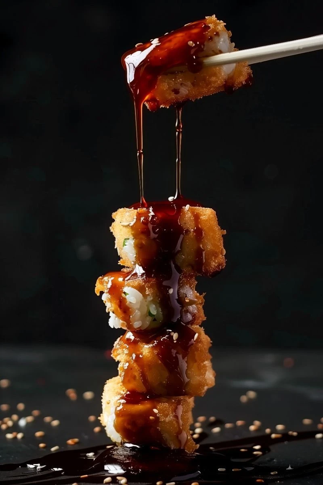
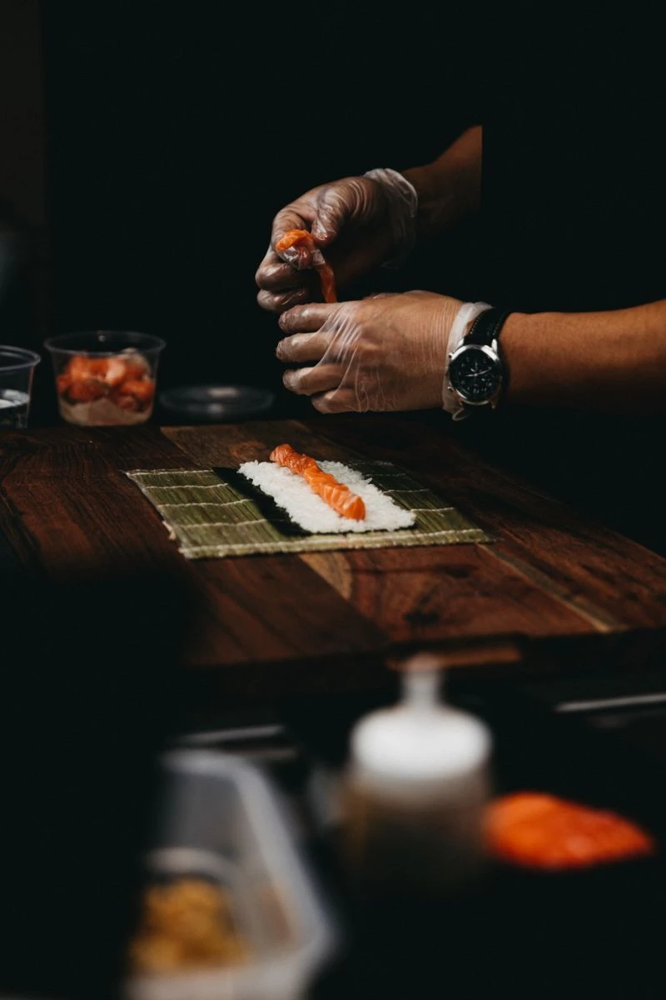
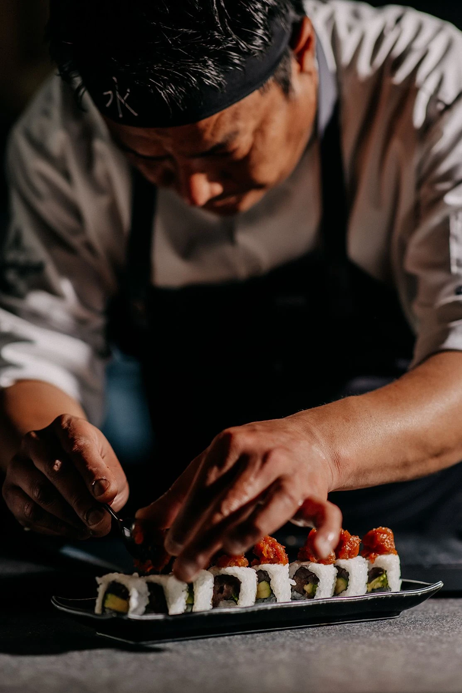
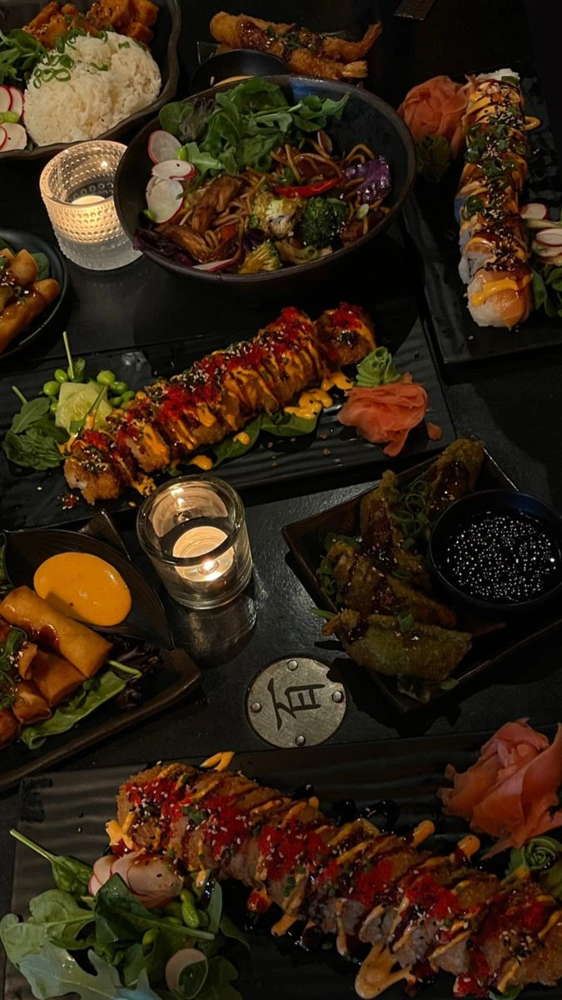
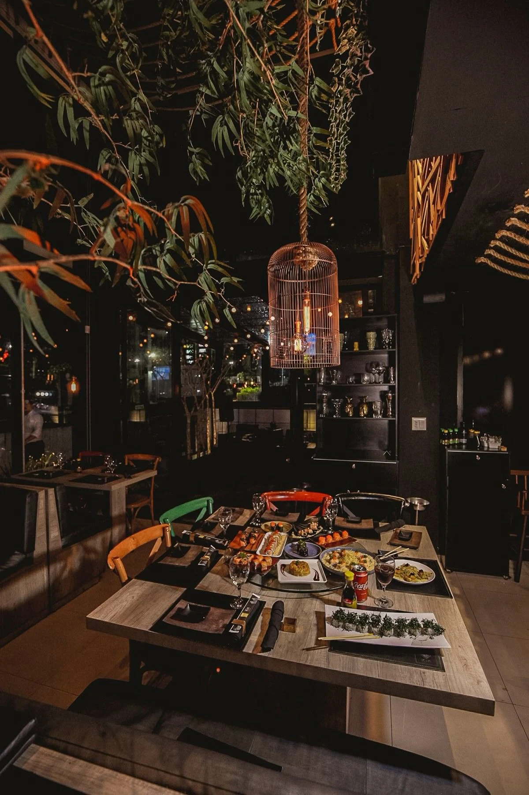

Dragon Tempura Roll
Crispy shrimp tempura, avocado, eel sauce, toasted sesame.
$24Fine Japanese Dining
Where precision, fire and the sea meet on a single plate.
View Menu
Our Philosophy
At Sushier, nothing is rushed. Each piece is shaped by hand, each sauce built in layers, each plate considered before it reaches the table. We work with what the sea offers that day — nothing more, nothing less — and let technique do the rest.
"Simplicity is the final form of sophistication."
Signature Dishes

Crispy shrimp tempura, avocado, eel sauce, toasted sesame.
$24
A seven-course tasting chosen daily by our head chef.
$95
An assortment of nigiri, sashimi and signature rolls for the table.
$145The Space

Join Us
For parties of 6 or more, please contact us directly.
Reserve Now